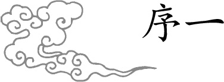
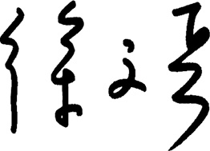

我妈妈是我的中医入门启蒙老师，六七岁的时候，帮妈妈抄《黄帝内经》，那时我什么也不懂，但小孩子的记忆是一辈子的，“美其食，任其服，乐其俗，高下不相慕……”这样的句子从那时就印在我的脑子里了。
梁冬曾笑着说自己学中医后，人生最大的改变是不那么有攻击性了——和了。以前他在凤凰的时候，觉得自己很牛——第一,自己年轻; 第二, 反正无知者无畏。他说自己是先“有知”，再重新回到“无知”，就这么个过程。
中医说白了，还是道家传承。道家是个被动的东西，它不会主动拉着你，“你一定要信我的教啊”，它不是，说是道不远人，但是你得等人去求道。古代讲“医不叩门”，没有说我敲开你家门，说“你有病，我给你治病”，人家会说：“你丫才有病呢！”它就是等着这个人来，向道去靠。
所以这个道的传播，包括中医的传播，它死不了——你说现在没有真正的中医了吧，我告诉你，民间有，民间还在传承。她的这种传播方式注定了她不会大红大紫，也注定她绝对不会烟消云散，她就是一个小河流水，自个儿流着，你爱到我这儿来洗洗脚、洗洗脸，欢迎，你不愿意来我也不去招你。所以我觉得中医和道学注定只能是少数人的享受，它不是大众娱乐的东西，也不是大众喜欢的东西。大众要是喜欢的话，是为什么？那是因为他病了，他要是没病的话，学什么道啊！老子熬夜打游戏还来不及呢，是吧？这是我个人的观点。
同样地，道家认为生命是最宝贵的，他才去研究怎么养生，怎么治病，当然，得有个前提你认为车是你家最贵的，你才会擦它修它维护它；你要是认为它不贵，你就扔那儿。
舍身取义其实是灭绝人性的教育，但我们现代人已经被这种教育渗透到了骨子里，当碰到事的时候，是加班加点完成工作还是睡觉，你绝对是舍身取义的。所以统治者教你们，一定要二十四小时开机啊。劳心者治人，劳力者治于人。
老天爷是公平的。那些失眠的到我这儿看病，我一看，哎哟，不是被开除的人，而是人事部经理，是开除别人的人，睡不着是劳心了，伤神了。有道理吧？其实当代的病，都出在这里——心有问题。所以很多时候我在治病，其实是在关注他们的心理问题。很多人被我治完病以后改变了，换了个活法。
我每次坐飞机前，会把一信封，里面有银行账号、钥匙，放在家里边——你要准备好死，现在才能活好；你老想着，明天再说，明天可能就摔死你。禅宗有个故事，最冷酷地揭示了一个道理——人生是什么？你掉下悬崖突然抓住根藤，底下有个猛虎，张着牙等着你，上面还有个耗子啃你的藤。这时候你咋办？你是痛苦还是焦虑？没事儿！一看旁边有颗草莓，摘下来吃，哎，真甜！这就是人生，能做到这一点的人，活出来了。当然，你想做到这一点，且得磨炼呢！你说老师把这道理讲了，讲了没用，必须得经过事儿，甚至是确实有了那种死的体会，死过一次，再活过来，感觉就会不一样，否则，天天地梦游。
老子说：“柔弱者生之徒也，刚强者死之徒也。”所以“无欲则刚”绝对是混蛋话。你看《黄帝内经》说什么？“各从其欲，皆得所愿”。在道家的理念里，同性恋去找同性伴侣，虐待狂找个受虐狂，这是对的呀，你干吗要纠正人家？无欲是不对的，纵欲也是不对的。
道家就是比较聪明，它在纵欲和抑欲之间选了个什么呢？节欲。节，有张有弛，所以道家更有人情味；不像有的人，说什么不是为了色。连做爱的时候都不是为了欲，是为了大义，你说这不是变态吗？
当然，中医也忌过度。曾有人问我抽烟否，我当然抽烟了，中医不抽烟，还叫中医吗？中医眼里没有什么善恶之分，你说善恶都得看具体的人，随便拎出来一件事儿你说好与不好，那都是相对论。
一般人会觉得医生是有很多禁忌的，其实没有，只是忌过度。就抽烟这个事吧，那时候我们一入学，我们老教授，王绵之，他是中医世家出来的，为中央领导看病的，他看病是左手号脉，右手一支中华烟。我那时候就知道，混医生要混到抽中华烟。他是一根不带断的，就是一根快灭了又点一根，抽一上午。我就说，老师怎么抽烟啊？他说你不知道抽烟补肺气啊！老先生的身体一直挺硬朗。
我有个朋友做了个小手术，切了个脂肪瘤，医生说不能喝酒，不能抽烟，不能吃辣的，不能熬夜，诸如此类吧。哎哟，把他给烦死了。对于这种情况，就中医来讲，首先你得忌熬夜。人的自我修复全是在熟睡以后，你不完成，就会长异物。有个得淋巴癌死的演员叫李钰，助理说她为了拍戏，连续五天五夜不睡觉，人都木了。什么叫人都木了？失神了！你说你身体里长个东西，神还在，这位人都木了，长什么她都管不了了，所以熬夜是最伤人的。
其实你敲胆经也好，敲带脉也好，不如你让神它自个儿敲。我们活得都很刻意，白天都是意识行为，里面的神都被压着呢，只有晚上意识灭了，神才开始工作了。结果你晚上还不睡，还不让神工作，最后神就跟你拜拜了，黯然神伤，一走了之。
现在就是犯贱的时代，人云亦云，流行啥就来啥，没有个性，只讲“富”不讲“贵”。这一到饭馆，说，把你这儿最贵的菜给我上一遍！这是富人，有钱；一到饭馆，说今儿什么节气，我什么体质，我按我的要求点两道菜。这是贵人。贵在哪儿呢？人贵在有自知之明——我了解自己，我什么心性什么体质，又了解周围的环境。
当今社会大部分的人活得累而自责。像老子那时候的上古文化，是一种有生命力的东西。上古之人比较纯粹、通达，也明白很多生命的大道理，反倒是后来社会乱了，人心也乱了。
我们小时候听说，一个有智慧的老人，对一个家庭是多么多么重要。以前我们都没有感受到，你说他们这些老人，不懂互联网，也不懂你们的新玩意儿，但是他们其实什么都懂，你跟他讲什么，他一句话就给你讲明白了。有些人不需要知道太多的事情，开了慧以后，很多东西是无所谓的。有很多老人，他们聪明，耳聪目明，心很敏感，你讲什么他们就立刻想了解；而且他们善良、快乐，也没有那么多焦虑，通达、洞察世事，经历了很多事情后仍然很快乐。因为他们懂天理、知人事，即使什么也没有，也没有多么难受，可以长命百岁。
“黄帝内经说什么”系列一共五本书，《黄帝内经·上古天真》论述了男女性生理和心理的变化规律，女性7年一个变化周期，男子8年一个变化周期，男女各自按照周期去生活，才能达到“愚智贤不肖、不惧于物，故合于道”的境地。
《黄帝内经·四气调神》讲的是天气变化的规律，强调的是人要按照“寒热温凉”四气变化的规律去调整自己的起居作息，调摄自己的情绪和心理，并指出了违背这个规律会导致的疾病和灾害。
《黄帝内经·天年》描述了每10年一个周期的人体运动变化规律，直到尽其天年到120岁。天命是人类不能摆脱的宿命。顺应这个节奏和规律，人就活得轻松快乐长久，违背这个规律和节奏，人就活得痛苦难受早夭。
《黄帝内经·异法方宜》阐述了天人合一的思想，一个人就是一个小宇宙，人类七尺之躯的存在、演化、衰退是暗合自然规律的。生于东西南北中各地，长于四时寒暑、春秋交替间，每个人都要辨证地保养身体，应对世事，吃穿住行要合天理、顺世道、应风水。
《黄帝内经·金匮真言》主要讲述气候变化对人的影响，教你借助天时让人生省力。
感谢梁冬邀请我参加“重新发现中医太美节目”去解读《黄帝内经》，使我有机会讲经说法。感谢中央人民广播电台“中国之声”编辑播出了这个节目，整整一年，造福影响了上百万的中国人。
感谢《黄帝内经》听打小组成员的辛勤工作，每次电台节目播出不久，对话的文字版就能见诸网上。
感谢马松兄和紫图图书能原汁原味呈现这个系列对话。
感谢姚晨、封新城、佟大为、胡赳赳等好友的热情推荐。
